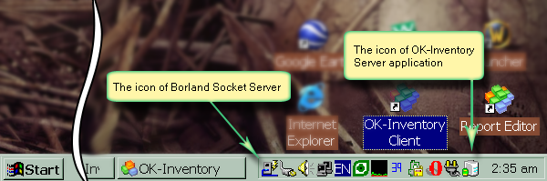
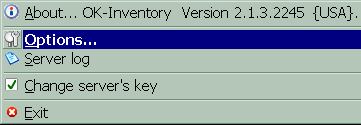
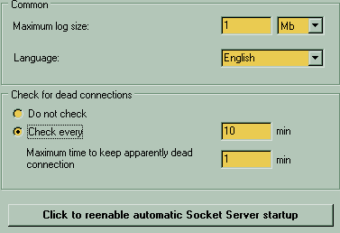

|
 The OK-Server application should be automatically launched by request from the clients application. To accomplish that task there exists another viable component - the Borland Socket Server. It is third party application that should be always running on the server computer to wait and process the requests from connecting client applications. You can see the OK-Server and Socket Server down in the "Tray" area of your program panel as show on this picture.  When you right-click on the server's tray icon it will bring the pop-up menu.
 The options for the server application is simple:
Check for dead connections section allow you to deal with clients connecting remotely via Internet or similar unreliable in general medium. If you set to check activity of the clients then one that did not sent any request or update to the database for the given time range will be forcibly disconnected to maintain low recourse usage by the server application. It will also unblock new connection requests because of limit imposed by your purchased license. So "check every" will instruct server to go trough the list of connected clients and look up the last time each of them did something. If some of them was inactive more than stated in "Maximum time to keep.." then this client will be disconnected immediately. The button with "Click to re-enable automatic Socket Server startup" caption will try to fix the case when the Borland Socked Server is not automatically started upon the Windows startup and therefore the clients cannot get access to the OK-Server application that runs only by Borland Socked Server when it detecting incoming connection from client.
|